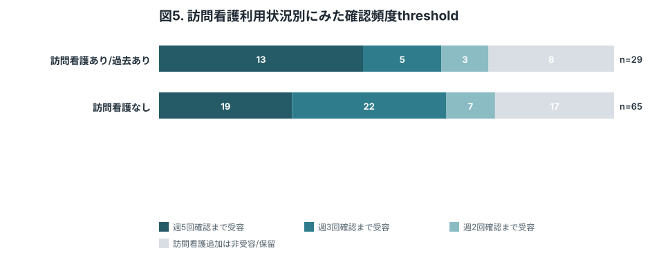
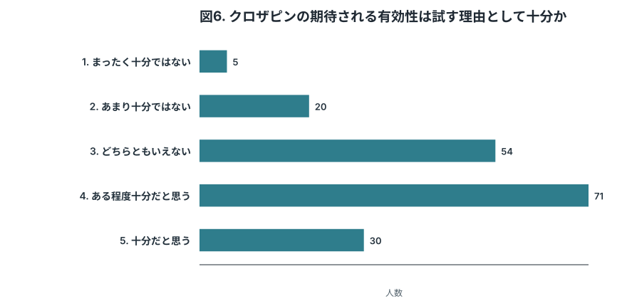
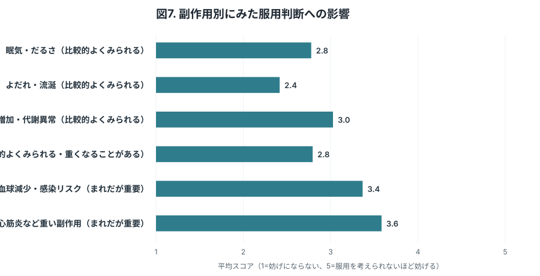
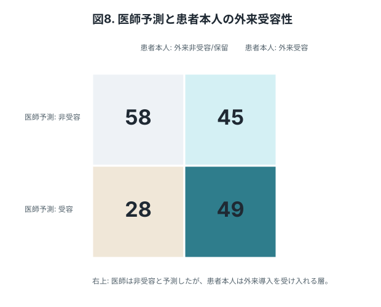
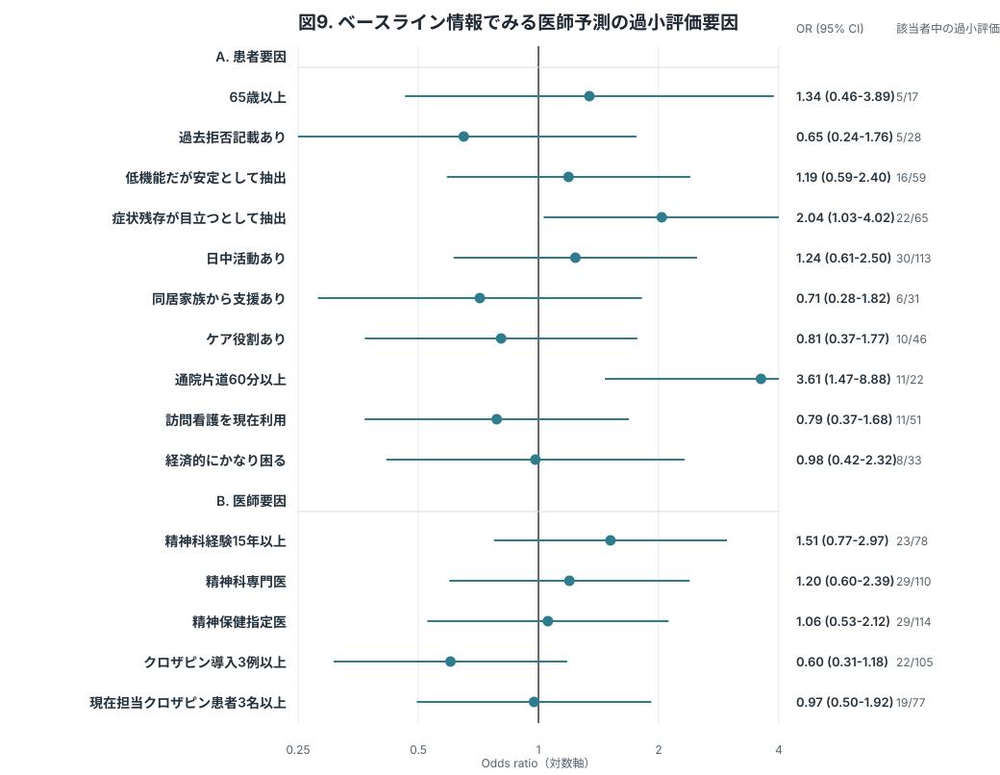

研究目的
主治医調査でクロザピン検討候補として抽出された患者本人が、入院導入と外来導入をどの程度前向きに考えられるかを明らかにする。
「入院は難しいが外来なら前向き」な患者の割合を推定し、外来導入が治療アクセスを広げる層を可視化する。
初期6週間の通院頻度と訪問看護を含む確認頻度について、患者が受容できるthresholdを把握する。
有効性説明、副作用説明、医師が想像する受容性とのギャップを整理し、患者説明・外来導入レジメン改善につなげる。
Methods 概要
対象者と回答前提
回答者には、現在の自分に主治医からクロザピン導入を提案された場面として回答してもらう。機能評価による層別や、将来の状態を想定した仮想シナリオは主解析から外す。
説明内容
クロザピンの適応、期待される有効性、採血・体調確認、頻度の高い副作用、まれだが重要な副作用を平易な文章と図で説明する。副作用は頻度と症状をセットで提示し、早期発見のための採血・相談体制も併記する。
主要アウトカム
まず入院導入を提案された場合の受容性を尋ねる。外来導入は抽象的なYes/Noではなく、初期6週間の通院頻度を週3回、週2回、週1回の順に提示し、初めて受容できる条件をthresholdとして記録する。
訪問看護threshold
通院頻度thresholdを決めた後、その通院頻度を固定し、訪問看護を加えて週5回、週3回、週2回程度の総確認頻度にした場合の受容性を尋ねる。これは外来導入レジメン作成に直接使う情報として扱う。
医師予測との接続
主治医調査で取得する「外来導入を提案した場合の患者受容見込み」と、患者本人の回答を対応づけ、医師が受容性を過小評価しやすい層を探索的に示す。
Parikh 2023に合わせ、まず同じ効果・安全性説明のもとで入院/外来の直接受容性を聞き、その後にTTへ進む。
Results 図表モック
Table 1. 回答者背景
| 変数 | カテゴリ/統計量 | 中央値 (IQR) または n (%) |
|---|---|---|
| 解析対象者 | 合計 | 180 |
| 年齢 | 中央値 (IQR) | 48 (40-56) |
| 対象集団 | 主治医抽出候補 | 180 (100.0%) |
| 現在の困りごと/つらさ | あり | 118 (65.6%) |
| なし/軽度 | 62 (34.4%) | |
| 日中活動 | 就労中 | 30 (16.7%) |
| 就学中 | 3 (1.7%) | |
| 福祉的就労 | 43 (23.9%) | |
| デイケア等 | 37 (20.6%) | |
| 主に自宅 | 61 (33.9%) | |
| その他 | 6 (3.3%) | |
| 日中活動の頻度 | 週0-1日 | 28 (15.6%) |
| 週2-3日 | 45 (25.0%) | |
| 週4日以上 | 40 (22.2%) | |
| 該当なし | 67 (37.2%) | |
| 同居状況 | 一人暮らし | 63 (35.0%) |
| 家族等と同居 | 71 (39.4%) | |
| 施設・グループホーム | 29 (16.1%) | |
| その他 | 17 (9.4%) | |
| 同居家族からの支援 | 受けられる | 31 (17.2%) |
| 少し受けられる | 25 (13.9%) | |
| ほぼ受けられない | 15 (8.3%) | |
| 同居なし | 109 (60.6%) | |
| 本人のケア役割 | なし | 134 (74.4%) |
| 子どものケア | 17 (9.4%) | |
| 親・配偶者等のケア | 23 (12.8%) | |
| その他 | 6 (3.3%) | |
| 通院片道時間 | 30分未満 | 90 (50.0%) |
| 30-60分 | 68 (37.8%) | |
| 60-90分 | 16 (8.9%) | |
| 90分以上 | 6 (3.3%) | |
| 主な通院手段 | 自分で運転 | 36 (20.0%) |
| 公共交通 | 39 (21.7%) | |
| 家族送迎 | 25 (13.9%) | |
| 通院同行・送迎 | 23 (12.8%) | |
| タクシー等の移動支援 | 15 (8.3%) | |
| 徒歩・自転車 | 37 (20.6%) | |
| その他 | 5 (2.8%) | |
| 訪問看護の現在利用 | あり | 51 (28.3%) |
| 過去あり | 14 (7.8%) | |
| なし | 115 (63.9%) | |
| 主な収入源 | 就労収入 | 41 (22.8%) |
| 障害年金 | 68 (37.8%) | |
| 生活保護 | 24 (13.3%) | |
| 家族支援 | 24 (13.3%) | |
| その他 | 10 (5.6%) | |
| 答えたくない | 13 (7.2%) | |
| 経済的余裕 | 困っていない | 64 (35.6%) |
| 少し困る | 67 (37.2%) | |
| かなり困る | 33 (18.3%) | |
| 答えたくない | 16 (8.9%) |
患者本人の受容性を解釈するため、現在の困りごと/つらさ、日中活動、通院手段、訪問看護、主な収入源、経済的余裕を最小限の背景情報として置く。

主治医調査でクロザピン検討候補として抽出された患者について、入院導入と外来導入の受容性を比較する中核図。外来導入受容性は抽象的なYes/Noではなく、週3/週2/週1通院条件のいずれかを受容した場合として定義する。Gee 2017（PubMed）やJakobsen 2025（PubMed）で入院導入が大きな障壁として示されたことを踏まえ、“入院は難しいが外来なら前向き”という潜在ニーズを可視化する。

入院導入を前向きに考える人と考えにくい人に分け、外来導入の通院頻度thresholdを示す中核図。入院導入を受け入れうる人でも外来週3回は難しい、あるいは入院導入は難しい人でも外来なら受容に転じる、といった現実的な選好のずれを示す。

外来導入を受容しうる人について、通院に訪問看護を加えた総確認頻度をどこまで受け入れられるかを示す図。安全に必要な頻度は医師が判断する前提で、その頻度を患者が受容可能かを直接把握する。

先に確定した通院頻度thresholdごとに、訪問看護を加えた確認頻度thresholdを示す図。週3回通院を受容する人、週2回なら受容する人、週1回なら受容する人で、追加モニタリングへの許容度が異なるかを確認する。

訪問看護の現在利用または過去利用の有無で、訪問看護を含む確認頻度thresholdがどう異なるかを示す図。訪問看護に慣れている患者では受容性が高い可能性があり、外来導入レジメン設計に直接関係する。

クロザピンの期待される有効性が、患者本人にとって服用を試す理由としてどの程度十分と受け止められるかを示す図。副作用や通院負担だけでなく、そもそも提示されたbenefitが十分な価値として受け止められているかを確認する。

副作用は単一項目にまとめると解釈しにくいため、眠気、流涎、体重増加、便秘、採血異常・感染リスク、心筋炎などに分けて、服用判断をどの程度妨げるかを測定する。

患者調査を臨床家調査と接続する図。Jakobsen 2025（PubMed）の示唆に沿い、医師が非受容と想定する患者の中にも外来導入なら受け入れる層がいるかを示す。

図8で医師予測が患者本人の回答より保守的だったケースについて、どのような事前情報と関連するかを単変量ORで示す。説明変数は、年齢、過去拒否記載、現在の困りごと/つらさ、生活・通院・訪問看護・経済状況、医師の経験・資格・クロザピン経験など、調査回答の前または初期に容易に把握できるベースライン情報に限定する。入院導入・外来導入への意向、副作用懸念、有効性十分性、医師の推奨率・理由選択率など、患者や医師の判断そのものに近い情報は入れない。